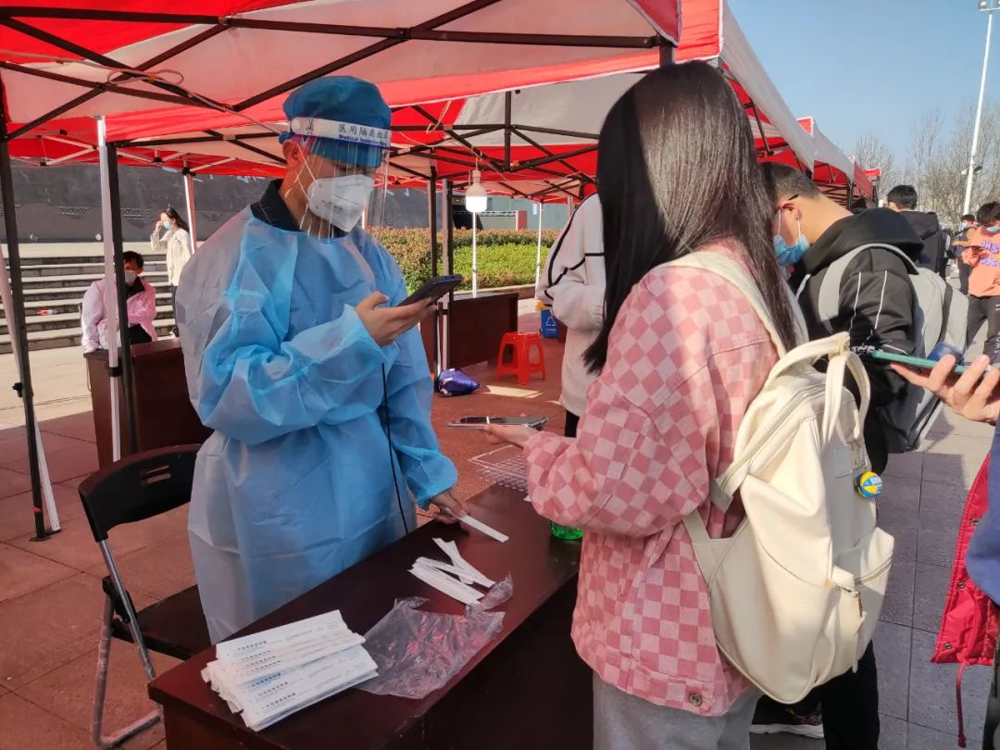

钟南山
与时间赛跑，奔赴第一线。
84岁的钟南山，有院士的专业，有战士的勇猛，更有国士的担当。一路奔波不知疲惫，满腔责任为国为民， 的的确确令人肃然起敬。(人民日报微博评价) 你是埋头苦干的战士，你是拼命硬干的先锋，你是为民请命的贤达，你是舍身求法的英雄。 你用盈盈的泪水，暖化的何止是武汉人，那是整个中国的百姓。(聊城文苑中学陈先义) “武汉是个英雄的城市，是能够过关的”
钟南山
与时间赛跑，奔赴第一线。
84岁的钟南山，有院士的专业，有战士的勇猛，更有国士的担当。一路奔波不知疲惫，满腔责任为国为民， 的的确确令人肃然起敬。(人民日报微博评价) 你是埋头苦干的战士，你是拼命硬干的先锋，你是为民请命的贤达，你是舍身求法的英雄。 你用盈盈的泪水，暖化的何止是武汉人，那是整个中国的百姓。(聊城文苑中学陈先义) “武汉是个英雄的城市，是能够过关的”
战疫显担当
青春有热血，战“疫”显担当。打赢疫情防控阻击战，青年无疑是重要力量。疫情就是命令，防控就是责任。习近平总书记强调：“现在，最关键的问题就是把落实工作抓实抓细。”众人拾柴、涓滴汇海，这场全民“战疫”，关键在于落实，成败系于落实。如何落实、靠谁落实? 青年责无旁贷，青春当仁不让。今天的中国青年，依然在“以青春之我，创建青春之国家，青春之民族”;今天的中国青年，依然在以滚烫的热血，闯新路、创新业，与人民共风雨，为祖国写新篇!
张定宇
我必须跑得更快，才能跑赢时间
他是院长，也是病患。他叫张定宇。作为收治患者最多的武汉金银潭医院的一院之长， 他另外的身份是一名渐冻症患者。行动不便的他，已在抗疫一线坚持了30余天。每天接上千个电话，处理无数突发事件的他， 无暇顾及感染新型冠状病毒的妻子，始终坚守在抗击疫情最前沿。他说：“我很内疚，我也许是个好医生，但不是个好丈夫 。我们结婚28年了，我也害怕，怕她身体扛不过去，怕失去她！”别人眼里风风火火的铁血男儿，害怕失去挚爱的缱绻，湿 了他的泪眼。一天睡眠不到两个小时的张定宇，正在和病魔争夺时间。“我必须跑得更快，才能跑赢时间，把重要的事情做 完;我必须跑得更快，才能从病毒手里，抢回更多的病人。 ”“以后我会被固定在轮椅上，我现在为什么不多做一点？” 张院长，您舍身忘我、无私无畏的爱民情怀，英雄硬汉形象彰显。
张文宏
人人都是战士，宅在家里不是隔离，也是在战斗
“输入康复血清，患者马上康复，这是电影!” “不管是人类还是病毒，用力过猛，都走不了远路。” “我们属于少林派，干净利索，社区防控强大无比!新加坡属于武当派，看起来很佛系，但内功非常厉害!” “大家看到的很多医生都是文质彬彬的，那都是假象，全都是假的，其实，真的医生实际上，水平越高脾气越大。 ”真正有水平的人，不愿盲从，不愿说谎，不愿低头，因为有骨头，尊事实，不谄媚，所以不好惹，有脾气。 “每个人都是战士，闷两个星期，也要把病毒闷死，你现在在家里，也是战斗啊” “当大幕落下(指疫情结束)，我自然会非常安静地离开。 过了这个时间，你到我们医院里，看见绕着墙根走路的那个人，就是我，很低调。 但是，这个疫情来了，我们整个医护工作者，就必须讲话，因为我们讲的是事实。”
武理防疫在日常
常态化疫情防控之下，我校开展疫苗接种志愿服务67次，累计派出志愿者1369人次；开展核酸检测57次，累计派出志愿者1831人次；维持返校秩序，协助开展信息核验10次，240名志愿者参与其中；开展健康档案信息录入12次，合计248人次；选派50余名志愿者负责封控楼栋每天的餐食配送、物资搬运工作。 越来越多的同学参与到抗疫之中，核酸检测、信息采集、餐食配送，一个个青春的脸庞，一片片坚毅、勇敢的目光，成为这个春天校园疫情防控的重要力量！

双毒合一！“德尔塔克戎”变体首次证实
法国马赛地中海传染病医疗和教学研究所研究人员3月8日在医学研究论文预印本网站medRxiv上发表文章称，他们通过基因组测序确认了这一新变体的存在。而且，该变体已在法国多个地区被检测到。 另外，全球流感共享数据库（GISAID）提供的数据显示，丹麦和荷兰也发现了“德尔塔克戎”相关病例。总部位于加利福尼亚州的基因研究公司Helix在美国发现了两例。据英国《卫报》报道，英国已经确认了约30例“德尔塔克戎”病例。而且，据GISAID称，这种新变体可能从1月份就开始在人群中传播了。 法国研究人员指出，“德尔塔克戎”这一杂交新变体通过重组产生。所谓重组指一种病毒的两个不同变体同时感染一名患者，会交换遗传物质以产生新的后代。发表于medRxiv的这篇论文指出，“德尔塔克戎”变体的“主干”来自德尔塔变体；而它的刺突蛋白——使病毒能够进入宿主细胞的蛋白则来自奥密克戎变体。 世界卫生组织（WHO）首席科学家苏米娅·斯瓦米纳坦博士3月8日在推文中写道：“我们已经知道，多个新冠病毒变体传播时，重组事件可能会在人或动物身上出现。现在，我们需要等待实验来确定这种新变体的特征。”